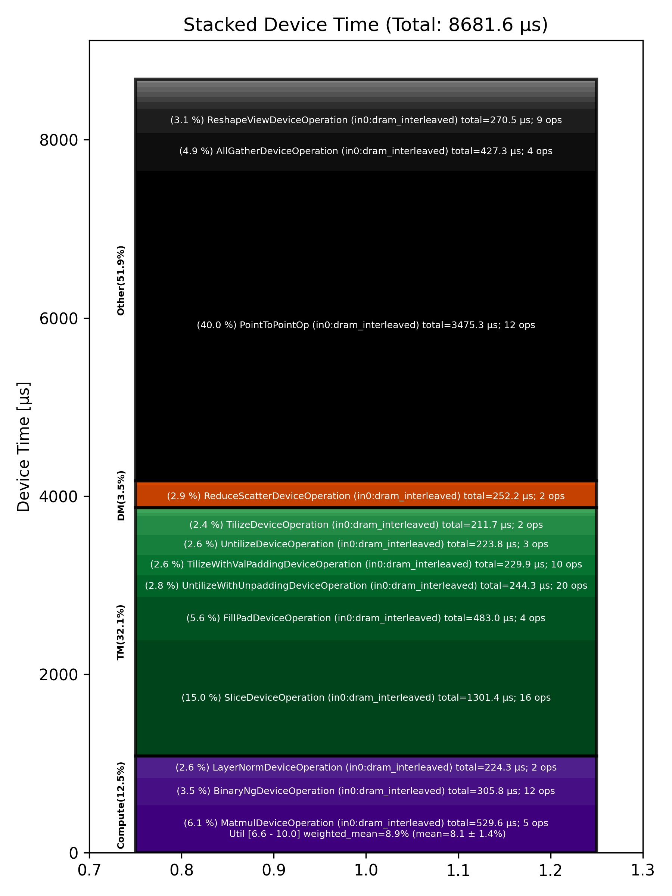

🚀 Performance Report 🚀 ======================== ID Total % Bound OP Code Device Device Time Op-to-Op Gap Cores DRAM DRAM % FLOPs FLOPs % Math Fidelity ---------------------------------------------------------------------------------------------------------------------------------------------------------------------------------- 26 0.0 % LayerNormDeviceOperation 16 112 μs 1 BF16, BF16 => BF16 57 0.0 % SLOW MatmulDeviceOperation 32 x 2880 x 640 21 44 μs 729 μs 20 47 GB/s 16.5 % 2.7 TFLOPs 6.6 % HiFi2 BF16 x BFP8 => BF16 90 0.0 % NLPCreateQKVHeadsDecodeDeviceOperation 16 5 μs 163 μs 16 BF16 => BF16 129 0.0 % ShardedToInterleavedDeviceOperation 8 1 μs 123 μs 16 BF16 => BF16 153 0.0 % RotaryEmbeddingDeviceOperation 12 8 μs 249 μs 16 BF16, BF16 => BF16 182 0.0 % SliceDeviceOperation 15 2 μs 260 μs 32 BF16 => BF16 222 0.0 % InterleavedToShardedDeviceOperation 11 1 μs 244 μs 16 BF16 => BF16 245 0.0 % PagedUpdateCacheDeviceOperation 23 4 μs 245 μs 16 BF16, BF16 => BF16 283 0.0 % PagedUpdateCacheDeviceOperation 17 4 μs 247 μs 16 BF16, BF16 => BF16 292 0.0 % ShardedToInterleavedDeviceOperation 26 1 μs 255 μs 16 BF16 => BF16 340 0.0 % RotaryEmbeddingDeviceOperation 22 8 μs 271 μs 16 BF16, BF16 => BF16 358 0.0 % SliceDeviceOperation 3 2 μs 246 μs 32 BF16 => BF16 396 0.0 % SdpaDecodeDeviceOperation 30 17 μs 328 μs 72 BF16, BF16 => BF16 433 0.0 % PermuteDeviceOperation 4 22 μs 212 μs 72 BF16 => BF16 467 0.0 % ReshapeViewDeviceOperation 21 14 μs 210 μs 16 BF16 => BF16 484 0.0 % SLOW MatmulDeviceOperation 32 x 512 x 2880 22 15 μs 424 μs 45 112 GB/s 39.0 % 6.3 TFLOPs 6.8 % HiFi2 BF16 x BFP8 => BF16 529 0.0 % AllGatherDeviceOperation 0 81 μs 475 μs 24 BF16 => BF16 555 0.0 % FillPadDeviceOperation 29 161 μs 55 μs 8 BF16 => BF16 583 0.0 % FastReduceNCDeviceOperation 2 10 μs 107 μs 72 BF16 => BF16 634 0.0 % SliceDeviceOperation 16 3 μs 228 μs 72 BF16 => BF16 665 0.0 % BinaryNgDeviceOperation 12 5 μs 126 μs 72 BF16, BF16 => BF16 683 0.0 % BinaryNgDeviceOperation 29 5 μs 157 μs 72 BF16, BF16 => BF16 709 0.0 % LayerNormDeviceOperation 27 112 μs 212 μs 1 BF16, BF16 => BF16 769 0.0 % SliceDeviceOperation 8 2 μs 146 μs 23 BF16 => BF16 799 0.0 % UntilizeWithUnpaddingDeviceOperation 10 9 μs 97 μs 45 BF16 => BF16 829 0.0 % SliceDeviceOperation 19 2 μs 158 μs 16 BF16 => BF16 855 0.0 % TilizeWithValPaddingDeviceOperation 14 38 μs 243 μs 1 BF16 => BF16 876 0.0 % SliceDeviceOperation 30 2 μs 213 μs 23 BF16 => BF16 919 0.0 % UntilizeWithUnpaddingDeviceOperation 14 9 μs 254 μs 45 BF16 => BF16 957 0.0 % SliceDeviceOperation 19 2 μs 253 μs 16 BF16 => BF16 971 0.0 % TilizeWithValPaddingDeviceOperation 29 38 μs 251 μs 1 BF16 => BF16 1020 0.0 % CopyDeviceOperation 18 2 μs 207 μs 23 BF16 => BF16 1028 0.0 % CopyDeviceOperation 26 2 μs 249 μs 23 BF16 => BF16 1083 0.0 % CopyDeviceOperation 17 2 μs 91 μs 23 BF16 => BF16 1096 0.0 % CopyDeviceOperation 1 2 μs 155 μs 23 BF16 => BF16 1128 0.0 % PointToPointOp 24 28 μs 252 μs 1 BF16, BF16 => BF16 1140 0.0 % PointToPointOp 24 32 μs 359 μs 1 BF16, BF16 => BF16 1204 0.0 % PointToPointOp 19 29 μs 288 μs 1 BF16, BF16 => BF16 1208 0.0 % PointToPointOp 31 34 μs 521 μs 1 BF16, BF16 => BF16 1210 0.0 % PointToPointOp 19 28 μs 735 μs 1 BF16, BF16 => BF16 1270 0.3 % PointToPointOp 9 32 μs 13,411 μs 1 BF16, BF16 => BF16 1338 0.3 % UntilizeWithUnpaddingDeviceOperation 16 19 μs 15,119 μs 1 BF16 => BF16 1374 0.0 % UntilizeWithUnpaddingDeviceOperation 11 19 μs 93 μs 1 BF16 => BF16 1399 0.0 % UntilizeWithUnpaddingDeviceOperation 14 19 μs 219 μs 1 BF16 => BF16 1413 0.0 % UntilizeWithUnpaddingDeviceOperation 27 19 μs 61 μs 1 BF16 => BF16 1456 0.0 % ConcatDeviceOperation 5 2 μs 156 μs 64 BF16, BF16 => BF16 1486 0.0 % TilizeWithValPaddingDeviceOperation 7 10 μs 106 μs 2 BF16 => BF16 1529 0.0 % UntilizeWithUnpaddingDeviceOperation 12 27 μs 194 μs 2 BF16 => BF16 1545 0.0 % RepeatDeviceOperation 0 8 μs 176 μs 72 BF16 => BF16 1589 0.0 % TilizeWithValPaddingDeviceOperation 23 22 μs 234 μs 8 BF16 => BF16 1620 0.0 % SLOW MatmulDeviceOperation b={4} x 64 x 736 x 5760 12 208 μs 913 μs 60 97 GB/s 33.8 % 10.4 TFLOPs 8.5 % HiFi2 BF16 x BFP8 => BF16 1649 0.0 % ReduceScatterDeviceOperation 0 102 μs 476 μs 24 BF16 => BF16 1681 0.0 % AllGatherDeviceOperation 0 98 μs 389 μs 40 BF16 => BF16 1717 0.0 % BinaryNgDeviceOperation 23 49 μs 33 μs 72 BF16, BF16 => BF16 1761 0.0 % UntilizeDeviceOperation 8 110 μs 121 μs 60 BF16 => BF16 1780 0.0 % SliceDeviceOperation 22 607 μs 137 μs 72 BF16 => BF16 1800 0.0 % TilizeDeviceOperation 1 106 μs 1 μs 45 BF16 => BF16 1857 0.0 % UnaryNgDeviceOperation 8 17 μs 1 μs 72 BF16 => BF16 1860 0.0 % BinaryNgDeviceOperation 26 22 μs 54 μs 72 BF16, BF16 => BF16 1893 0.0 % UntilizeDeviceOperation 27 109 μs 218 μs 60 BF16 => BF16 1949 0.0 % SliceDeviceOperation 19 608 μs 124 μs 72 BF16 => BF16 1984 0.0 % TilizeDeviceOperation 9 106 μs 1 μs 45 BF16 => BF16 2014 0.0 % UnaryNgDeviceOperation 11 17 μs 1 μs 72 BF16 => BF16 2019 0.0 % BinaryNgDeviceOperation 25 23 μs 1 μs 72 BF16, BF16 => BF16 2076 0.0 % UnaryNgDeviceOperation 18 19 μs 37 μs 72 BF16 => BF16 2100 0.0 % BinaryNgDeviceOperation 22 23 μs 255 μs 72 BF16, BF16 => BF16 2132 0.0 % BinaryNgDeviceOperation 22 23 μs 223 μs 72 BF16, BF16 => BF16 2177 0.0 % SLOW MatmulDeviceOperation b={4} x 64 x 2880 x 736 11 230 μs 500 μs 23 45 GB/s 15.6 % 4.7 TFLOPs 10.0 % HiFi2 BF16 x BFP8 => BF16 2183 0.0 % BinaryNgDeviceOperation 2 8 μs 1 μs 72 BF16, BF16 => BF16 2235 0.0 % ReshapeViewDeviceOperation 17 163 μs 84 μs 72 BF16 => BF16 2258 0.0 % TypecastDeviceOperation 20 5 μs 150 μs 72 BF16 => FP32 2276 0.0 % SLOW MatmulDeviceOperation 32 x 2880 x 32 22 33 μs 459 μs 1 14 GB/s 5.0 % 0.2 TFLOPs 8.8 % HiFi2 FP32 x BFP8 => FP32 2307 0.0 % TypecastDeviceOperation 25 2 μs 85 μs 1 FP32 => BF16 2356 0.0 % FillPadDeviceOperation 22 3 μs 174 μs 1 BF16 => BF16 2395 0.0 % PadDeviceOperation 17 35 μs 251 μs 2 BF16 => BF16 2410 0.0 % FillPadDeviceOperation 28 5 μs 199 μs 1 BF16 => BF16 2453 0.0 % TopKDeviceOperation 23 44 μs 96 μs 1 BF16 => BF16 2486 0.0 % SliceDeviceOperation 15 1 μs 119 μs 1 BF16 => BF16 2507 0.0 % SliceDeviceOperation 29 1 μs 240 μs 1 UINT16 => UINT16 2542 0.0 % TypecastDeviceOperation 7 2 μs 111 μs 1 UINT16 => FP32 2579 0.0 % ReshapeViewDeviceOperation 21 5 μs 146 μs 16 FP32 => FP32 2625 0.0 % TypecastDeviceOperation 8 4 μs 249 μs 16 FP32 => INT32 2638 0.0 % UntilizeWithUnpaddingDeviceOperation 7 3 μs 254 μs 16 INT32 => INT32 2678 0.0 % UntilizeWithUnpaddingDeviceOperation 15 3 μs 248 μs 16 INT32 => INT32 2720 0.0 % PermuteDeviceOperation 9 3 μs 100 μs 16 INT32 => INT32 2747 0.0 % PermuteDeviceOperation 17 3 μs 168 μs 16 INT32 => INT32 2764 0.0 % ConcatDeviceOperation 30 2 μs 230 μs 32 INT32, INT32 => INT32 2791 0.0 % PermuteDeviceOperation 2 3 μs 107 μs 16 INT32 => INT32 2824 0.0 % TilizeWithValPaddingDeviceOperation 1 7 μs 164 μs 16 INT32 => INT32 2868 0.0 % SoftmaxDeviceOperation 22 23 μs 284 μs 72 BF16 => BF16 2897 0.0 % AllGatherDeviceOperation 0 61 μs 621 μs 24 INT32 => INT32 2914 0.0 % AllBroadcastDeviceOperation 8 54 μs 255 μs 4 BF16 => BF16 2957 0.0 % UntilizeWithUnpaddingDeviceOperation 31 7 μs 124 μs 1 BF16 => BF16 3006 0.0 % UntilizeWithUnpaddingDeviceOperation 11 7 μs 160 μs 1 BF16 => BF16 3021 0.0 % UntilizeWithUnpaddingDeviceOperation 31 7 μs 238 μs 1 BF16 => BF16 3061 0.0 % UntilizeWithUnpaddingDeviceOperation 23 7 μs 101 μs 1 BF16 => BF16 3092 0.0 % ConcatDeviceOperation 22 2 μs 164 μs 64 BF16, BF16 => BF16 3132 0.0 % TilizeWithValPaddingDeviceOperation 18 5 μs 262 μs 2 BF16 => BF16 3156 0.0 % ReshapeViewDeviceOperation 22 10 μs 328 μs 8 INT32 => INT32 3175 0.0 % SliceDeviceOperation 2 2 μs 208 μs 8 INT32 => INT32 3220 0.0 % UntilizeWithUnpaddingDeviceOperation 22 14 μs 252 μs 8 INT32 => INT32 3253 0.0 % SliceDeviceOperation 23 4 μs 116 μs 72 INT32 => INT32 3278 0.0 % TilizeWithValPaddingDeviceOperation 7 8 μs 137 μs 8 INT32 => INT32 3319 0.0 % BinaryNgDeviceOperation 14 11 μs 284 μs 72 INT32, INT32 => INT32 3348 0.0 % BinaryNgDeviceOperation 22 3 μs 230 μs 72 INT32, INT32 => INT32 3385 0.0 % ReshapeViewDeviceOperation 12 7 μs 228 μs 8 INT32 => INT32 3396 0.0 % ReshapeViewDeviceOperation 26 3 μs 253 μs 8 BF16 => BF16 3447 0.0 % UntilizeWithUnpaddingDeviceOperation 14 7 μs 266 μs 1 INT32 => INT32 3471 0.0 % UntilizeWithUnpaddingDeviceOperation 6 6 μs 241 μs 1 BF16 => BF16 3506 0.0 % ScatterDeviceOperation 20 60 μs 253 μs 1 BF16, INT32 => BF16 3538 0.0 % TilizeWithValPaddingDeviceOperation 20 5 μs 206 μs 64 BF16 => BF16 3564 0.0 % ReshapeViewDeviceOperation 30 23 μs 225 μs 2 BF16 => BF16 3615 0.0 % UntilizeDeviceOperation 10 4 μs 230 μs 2 BF16 => BF16 3632 0.0 % MeshPartitionDeviceOperation 2 2 μs 1,349 μs 64 BF16 => BF16 3664 0.0 % TilizeWithValPaddingDeviceOperation 5 5 μs 123 μs 2 BF16 => BF16 3689 0.0 % TransposeDeviceOperation 0 2 μs 201 μs 72 BF16 => BF16 3745 0.0 % ReshapeViewDeviceOperation 8 17 μs 284 μs 72 BF16 => BF16 3771 0.0 % BinaryNgDeviceOperation 17 128 μs 235 μs 72 BF16, BF16 => BF16 3793 0.0 % FillPadDeviceOperation 4 315 μs 148 μs 72 BF16 => BF16 3838 0.0 % FastReduceNCDeviceOperation 11 66 μs 1 μs 72 BF16 => BF16 3861 0.0 % SliceDeviceOperation 23 35 μs 124 μs 72 BF16 => BF16 3889 0.0 % ReduceScatterDeviceOperation 0 151 μs 835 μs 24 BF16 => BF16 3921 0.0 % AllGatherDeviceOperation 0 186 μs 355 μs 40 BF16 => BF16 3949 0.0 % SliceDeviceOperation 31 8 μs 1 μs 72 BF16 => BF16 3972 0.0 % SliceDeviceOperation 26 8 μs 108 μs 72 BF16 => BF16 4013 0.0 % SliceDeviceOperation 31 8 μs 237 μs 72 BF16 => BF16 4038 0.0 % SliceDeviceOperation 3 8 μs 315 μs 72 BF16 => BF16 4097 0.0 % CopyDeviceOperation 8 9 μs 250 μs 72 BF16 => BF16 4120 0.0 % CopyDeviceOperation 13 8 μs 209 μs 72 BF16 => BF16 4156 0.0 % CopyDeviceOperation 18 8 μs 72 μs 72 BF16 => BF16 4165 0.0 % CopyDeviceOperation 27 9 μs 151 μs 72 BF16 => BF16 4200 0.0 % PointToPointOp 24 364 μs 88 μs 1 BF16, BF16 => BF16 4318 49.3 % PointToPointOp 10 420 μs 2,136,901 μs 1 BF16, BF16 => BF16 4324 0.0 % PointToPointOp 10 534 μs 5 μs 1 BF16, BF16 => BF16 4336 0.0 % PointToPointOp 14 894 μs 5 μs 1 BF16, BF16 => BF16 4376 0.0 % PointToPointOp 4 543 μs 3 μs 1 BF16, BF16 => BF16 4378 0.0 % PointToPointOp 8 538 μs 5 μs 1 BF16, BF16 => BF16 4388 49.2 % UntilizeWithUnpaddingDeviceOperation 26 15 μs 2,134,727 μs 16 BF16 => BF16 4441 0.0 % UntilizeWithUnpaddingDeviceOperation 12 16 μs 1 μs 16 BF16 => BF16 4481 0.0 % UntilizeWithUnpaddingDeviceOperation 8 16 μs 1 μs 16 BF16 => BF16 4505 0.0 % UntilizeWithUnpaddingDeviceOperation 12 16 μs 1 μs 16 BF16 => BF16 4517 0.0 % ConcatDeviceOperation 27 3 μs 170 μs 16 BF16, BF16 => BF16 4558 0.0 % TilizeWithValPaddingDeviceOperation 7 92 μs 137 μs 45 BF16 => BF16 4580 0.0 % ReshapeViewDeviceOperation 26 29 μs 121 μs 72 BF16 => BF16 4641 0.0 % BinaryNgDeviceOperation 8 5 μs 218 μs 72 BF16, BF16 => BF16 ---------------------------------------------------------------------------------------------------------------------------------------------------------------------------------- 100.0 % 145 device ops, 0 host ops, 0 signposts 8,682 μs 4,329,974 μs 💡 Advice 💡 ============ High Op-to-Op Gap ---------------- 57 0.0 % SLOW MatmulDeviceOperation 32 x 2880 x 640 21 44 μs 729 μs 20 47 GB/s 16.5 % 2.7 TFLOPs 6.6 % HiFi2 BF16 x BFP8 => BF16 90 0.0 % NLPCreateQKVHeadsDecodeDeviceOperation 16 5 μs 163 μs 16 BF16 => BF16 129 0.0 % ShardedToInterleavedDeviceOperation 8 1 μs 123 μs 16 BF16 => BF16 153 0.0 % RotaryEmbeddingDeviceOperation 12 8 μs 249 μs 16 BF16, BF16 => BF16 182 0.0 % SliceDeviceOperation 15 2 μs 260 μs 32 BF16 => BF16 222 0.0 % InterleavedToShardedDeviceOperation 11 1 μs 244 μs 16 BF16 => BF16 245 0.0 % PagedUpdateCacheDeviceOperation 23 4 μs 245 μs 16 BF16, BF16 => BF16 283 0.0 % PagedUpdateCacheDeviceOperation 17 4 μs 247 μs 16 BF16, BF16 => BF16 292 0.0 % ShardedToInterleavedDeviceOperation 26 1 μs 255 μs 16 BF16 => BF16 340 0.0 % RotaryEmbeddingDeviceOperation 22 8 μs 271 μs 16 BF16, BF16 => BF16 358 0.0 % SliceDeviceOperation 3 2 μs 246 μs 32 BF16 => BF16 396 0.0 % SdpaDecodeDeviceOperation 30 17 μs 328 μs 72 BF16, BF16 => BF16 433 0.0 % PermuteDeviceOperation 4 22 μs 212 μs 72 BF16 => BF16 467 0.0 % ReshapeViewDeviceOperation 21 14 μs 210 μs 16 BF16 => BF16 484 0.0 % SLOW MatmulDeviceOperation 32 x 512 x 2880 22 15 μs 424 μs 45 112 GB/s 39.0 % 6.3 TFLOPs 6.8 % HiFi2 BF16 x BFP8 => BF16 529 0.0 % AllGatherDeviceOperation 0 81 μs 475 μs 24 BF16 => BF16 555 0.0 % FillPadDeviceOperation 29 161 μs 55 μs 8 BF16 => BF16 583 0.0 % FastReduceNCDeviceOperation 2 10 μs 107 μs 72 BF16 => BF16 634 0.0 % SliceDeviceOperation 16 3 μs 228 μs 72 BF16 => BF16 665 0.0 % BinaryNgDeviceOperation 12 5 μs 126 μs 72 BF16, BF16 => BF16 683 0.0 % BinaryNgDeviceOperation 29 5 μs 157 μs 72 BF16, BF16 => BF16 709 0.0 % LayerNormDeviceOperation 27 112 μs 212 μs 1 BF16, BF16 => BF16 769 0.0 % SliceDeviceOperation 8 2 μs 146 μs 23 BF16 => BF16 799 0.0 % UntilizeWithUnpaddingDeviceOperation 10 9 μs 97 μs 45 BF16 => BF16 829 0.0 % SliceDeviceOperation 19 2 μs 158 μs 16 BF16 => BF16 855 0.0 % TilizeWithValPaddingDeviceOperation 14 38 μs 243 μs 1 BF16 => BF16 876 0.0 % SliceDeviceOperation 30 2 μs 213 μs 23 BF16 => BF16 919 0.0 % UntilizeWithUnpaddingDeviceOperation 14 9 μs 254 μs 45 BF16 => BF16 957 0.0 % SliceDeviceOperation 19 2 μs 253 μs 16 BF16 => BF16 971 0.0 % TilizeWithValPaddingDeviceOperation 29 38 μs 251 μs 1 BF16 => BF16 1020 0.0 % CopyDeviceOperation 18 2 μs 207 μs 23 BF16 => BF16 1028 0.0 % CopyDeviceOperation 26 2 μs 249 μs 23 BF16 => BF16 1083 0.0 % CopyDeviceOperation 17 2 μs 91 μs 23 BF16 => BF16 1096 0.0 % CopyDeviceOperation 1 2 μs 155 μs 23 BF16 => BF16 1128 0.0 % PointToPointOp 24 28 μs 252 μs 1 BF16, BF16 => BF16 1140 0.0 % PointToPointOp 24 32 μs 359 μs 1 BF16, BF16 => BF16 1204 0.0 % PointToPointOp 19 29 μs 288 μs 1 BF16, BF16 => BF16 1208 0.0 % PointToPointOp 31 34 μs 521 μs 1 BF16, BF16 => BF16 1210 0.0 % PointToPointOp 19 28 μs 735 μs 1 BF16, BF16 => BF16 1270 0.3 % PointToPointOp 9 32 μs 13,411 μs 1 BF16, BF16 => BF16 1338 0.3 % UntilizeWithUnpaddingDeviceOperation 16 19 μs 15,119 μs 1 BF16 => BF16 1374 0.0 % UntilizeWithUnpaddingDeviceOperation 11 19 μs 93 μs 1 BF16 => BF16 1399 0.0 % UntilizeWithUnpaddingDeviceOperation 14 19 μs 219 μs 1 BF16 => BF16 1413 0.0 % UntilizeWithUnpaddingDeviceOperation 27 19 μs 61 μs 1 BF16 => BF16 1456 0.0 % ConcatDeviceOperation 5 2 μs 156 μs 64 BF16, BF16 => BF16 1486 0.0 % TilizeWithValPaddingDeviceOperation 7 10 μs 106 μs 2 BF16 => BF16 1529 0.0 % UntilizeWithUnpaddingDeviceOperation 12 27 μs 194 μs 2 BF16 => BF16 1545 0.0 % RepeatDeviceOperation 0 8 μs 176 μs 72 BF16 => BF16 1589 0.0 % TilizeWithValPaddingDeviceOperation 23 22 μs 234 μs 8 BF16 => BF16 1620 0.0 % SLOW MatmulDeviceOperation b={4} x 64 x 736 x 5760 12 208 μs 913 μs 60 97 GB/s 33.8 % 10.4 TFLOPs 8.5 % HiFi2 BF16 x BFP8 => BF16 1649 0.0 % ReduceScatterDeviceOperation 0 102 μs 476 μs 24 BF16 => BF16 1681 0.0 % AllGatherDeviceOperation 0 98 μs 389 μs 40 BF16 => BF16 1717 0.0 % BinaryNgDeviceOperation 23 49 μs 33 μs 72 BF16, BF16 => BF16 1761 0.0 % UntilizeDeviceOperation 8 110 μs 121 μs 60 BF16 => BF16 1780 0.0 % SliceDeviceOperation 22 607 μs 137 μs 72 BF16 => BF16 1860 0.0 % BinaryNgDeviceOperation 26 22 μs 54 μs 72 BF16, BF16 => BF16 1893 0.0 % UntilizeDeviceOperation 27 109 μs 218 μs 60 BF16 => BF16 1949 0.0 % SliceDeviceOperation 19 608 μs 124 μs 72 BF16 => BF16 2076 0.0 % UnaryNgDeviceOperation 18 19 μs 37 μs 72 BF16 => BF16 2100 0.0 % BinaryNgDeviceOperation 22 23 μs 255 μs 72 BF16, BF16 => BF16 2132 0.0 % BinaryNgDeviceOperation 22 23 μs 223 μs 72 BF16, BF16 => BF16 2177 0.0 % SLOW MatmulDeviceOperation b={4} x 64 x 2880 x 736 11 230 μs 500 μs 23 45 GB/s 15.6 % 4.7 TFLOPs 10.0 % HiFi2 BF16 x BFP8 => BF16 2235 0.0 % ReshapeViewDeviceOperation 17 163 μs 84 μs 72 BF16 => BF16 2258 0.0 % TypecastDeviceOperation 20 5 μs 150 μs 72 BF16 => FP32 2276 0.0 % SLOW MatmulDeviceOperation 32 x 2880 x 32 22 33 μs 459 μs 1 14 GB/s 5.0 % 0.2 TFLOPs 8.8 % HiFi2 FP32 x BFP8 => FP32 2307 0.0 % TypecastDeviceOperation 25 2 μs 85 μs 1 FP32 => BF16 2356 0.0 % FillPadDeviceOperation 22 3 μs 174 μs 1 BF16 => BF16 2395 0.0 % PadDeviceOperation 17 35 μs 251 μs 2 BF16 => BF16 2410 0.0 % FillPadDeviceOperation 28 5 μs 199 μs 1 BF16 => BF16 2453 0.0 % TopKDeviceOperation 23 44 μs 96 μs 1 BF16 => BF16 2486 0.0 % SliceDeviceOperation 15 1 μs 119 μs 1 BF16 => BF16 2507 0.0 % SliceDeviceOperation 29 1 μs 240 μs 1 UINT16 => UINT16 2542 0.0 % TypecastDeviceOperation 7 2 μs 111 μs 1 UINT16 => FP32 2579 0.0 % ReshapeViewDeviceOperation 21 5 μs 146 μs 16 FP32 => FP32 2625 0.0 % TypecastDeviceOperation 8 4 μs 249 μs 16 FP32 => INT32 2638 0.0 % UntilizeWithUnpaddingDeviceOperation 7 3 μs 254 μs 16 INT32 => INT32 2678 0.0 % UntilizeWithUnpaddingDeviceOperation 15 3 μs 248 μs 16 INT32 => INT32 2720 0.0 % PermuteDeviceOperation 9 3 μs 100 μs 16 INT32 => INT32 2747 0.0 % PermuteDeviceOperation 17 3 μs 168 μs 16 INT32 => INT32 2764 0.0 % ConcatDeviceOperation 30 2 μs 230 μs 32 INT32, INT32 => INT32 2791 0.0 % PermuteDeviceOperation 2 3 μs 107 μs 16 INT32 => INT32 2824 0.0 % TilizeWithValPaddingDeviceOperation 1 7 μs 164 μs 16 INT32 => INT32 2868 0.0 % SoftmaxDeviceOperation 22 23 μs 284 μs 72 BF16 => BF16 2897 0.0 % AllGatherDeviceOperation 0 61 μs 621 μs 24 INT32 => INT32 2914 0.0 % AllBroadcastDeviceOperation 8 54 μs 255 μs 4 BF16 => BF16 2957 0.0 % UntilizeWithUnpaddingDeviceOperation 31 7 μs 124 μs 1 BF16 => BF16 3006 0.0 % UntilizeWithUnpaddingDeviceOperation 11 7 μs 160 μs 1 BF16 => BF16 3021 0.0 % UntilizeWithUnpaddingDeviceOperation 31 7 μs 238 μs 1 BF16 => BF16 3061 0.0 % UntilizeWithUnpaddingDeviceOperation 23 7 μs 101 μs 1 BF16 => BF16 3092 0.0 % ConcatDeviceOperation 22 2 μs 164 μs 64 BF16, BF16 => BF16 3132 0.0 % TilizeWithValPaddingDeviceOperation 18 5 μs 262 μs 2 BF16 => BF16 3156 0.0 % ReshapeViewDeviceOperation 22 10 μs 328 μs 8 INT32 => INT32 3175 0.0 % SliceDeviceOperation 2 2 μs 208 μs 8 INT32 => INT32 3220 0.0 % UntilizeWithUnpaddingDeviceOperation 22 14 μs 252 μs 8 INT32 => INT32 3253 0.0 % SliceDeviceOperation 23 4 μs 116 μs 72 INT32 => INT32 3278 0.0 % TilizeWithValPaddingDeviceOperation 7 8 μs 137 μs 8 INT32 => INT32 3319 0.0 % BinaryNgDeviceOperation 14 11 μs 284 μs 72 INT32, INT32 => INT32 3348 0.0 % BinaryNgDeviceOperation 22 3 μs 230 μs 72 INT32, INT32 => INT32 3385 0.0 % ReshapeViewDeviceOperation 12 7 μs 228 μs 8 INT32 => INT32 3396 0.0 % ReshapeViewDeviceOperation 26 3 μs 253 μs 8 BF16 => BF16 3447 0.0 % UntilizeWithUnpaddingDeviceOperation 14 7 μs 266 μs 1 INT32 => INT32 3471 0.0 % UntilizeWithUnpaddingDeviceOperation 6 6 μs 241 μs 1 BF16 => BF16 3506 0.0 % ScatterDeviceOperation 20 60 μs 253 μs 1 BF16, INT32 => BF16 3538 0.0 % TilizeWithValPaddingDeviceOperation 20 5 μs 206 μs 64 BF16 => BF16 3564 0.0 % ReshapeViewDeviceOperation 30 23 μs 225 μs 2 BF16 => BF16 3615 0.0 % UntilizeDeviceOperation 10 4 μs 230 μs 2 BF16 => BF16 3632 0.0 % MeshPartitionDeviceOperation 2 2 μs 1,349 μs 64 BF16 => BF16 3664 0.0 % TilizeWithValPaddingDeviceOperation 5 5 μs 123 μs 2 BF16 => BF16 3689 0.0 % TransposeDeviceOperation 0 2 μs 201 μs 72 BF16 => BF16 3745 0.0 % ReshapeViewDeviceOperation 8 17 μs 284 μs 72 BF16 => BF16 3771 0.0 % BinaryNgDeviceOperation 17 128 μs 235 μs 72 BF16, BF16 => BF16 3793 0.0 % FillPadDeviceOperation 4 315 μs 148 μs 72 BF16 => BF16 3861 0.0 % SliceDeviceOperation 23 35 μs 124 μs 72 BF16 => BF16 3889 0.0 % ReduceScatterDeviceOperation 0 151 μs 835 μs 24 BF16 => BF16 3921 0.0 % AllGatherDeviceOperation 0 186 μs 355 μs 40 BF16 => BF16 3972 0.0 % SliceDeviceOperation 26 8 μs 108 μs 72 BF16 => BF16 4013 0.0 % SliceDeviceOperation 31 8 μs 237 μs 72 BF16 => BF16 4038 0.0 % SliceDeviceOperation 3 8 μs 315 μs 72 BF16 => BF16 4097 0.0 % CopyDeviceOperation 8 9 μs 250 μs 72 BF16 => BF16 4120 0.0 % CopyDeviceOperation 13 8 μs 209 μs 72 BF16 => BF16 4156 0.0 % CopyDeviceOperation 18 8 μs 72 μs 72 BF16 => BF16 4165 0.0 % CopyDeviceOperation 27 9 μs 151 μs 72 BF16 => BF16 4200 0.0 % PointToPointOp 24 364 μs 88 μs 1 BF16, BF16 => BF16 4318 49.3 % PointToPointOp 10 420 μs 2,136,901 μs 1 BF16, BF16 => BF16 4388 49.2 % UntilizeWithUnpaddingDeviceOperation 26 15 μs 2,134,727 μs 16 BF16 => BF16 4517 0.0 % ConcatDeviceOperation 27 3 μs 170 μs 16 BF16, BF16 => BF16 4558 0.0 % TilizeWithValPaddingDeviceOperation 7 92 μs 137 μs 45 BF16 => BF16 4580 0.0 % ReshapeViewDeviceOperation 26 29 μs 121 μs 72 BF16 => BF16 4641 0.0 % BinaryNgDeviceOperation 8 5 μs 218 μs 72 BF16, BF16 => BF16 These ops have a >6 μs gap since the previous operation. Running with tracing could save 4329176 μs (99.8% of overall time) Alternatively ensure device is not waiting for the host and use device.enable_async(True). Experts can try moving runtime args in the kernels to compile-time args. Matmul Optimization ------------------- 57 0.0 % SLOW MatmulDeviceOperation 32 x 2880 x 640 21 44 μs 729 μs 20 47 GB/s 16.5 % 2.7 TFLOPs 6.6 % HiFi2 BF16 x BFP8 => BF16 - If possible place input 0 in L1 (currently in DEV_2_DRAM_INTERLEAVED) - Output subblock 1x1 is small, try out_subblock_h * out_subblock_w >= 2 if possible - If your matmuls are not FLOP-bound use HiFi4 with BF16 activations for full accuracy 484 0.0 % SLOW MatmulDeviceOperation 32 x 512 x 2880 22 15 μs 424 μs 45 112 GB/s 39.0 % 6.3 TFLOPs 6.8 % HiFi2 BF16 x BFP8 => BF16 - If possible place input 0 in L1 (currently in DEV_2_DRAM_INTERLEAVED) - in0_block_w=2 and output subblock 1x2 look good 🤷 - If your matmuls are not FLOP-bound use HiFi4 with BF16 activations for full accuracy 1620 0.0 % SLOW MatmulDeviceOperation b={4} x 64 x 736 x 5760 12 208 μs 913 μs 60 97 GB/s 33.8 % 10.4 TFLOPs 8.5 % HiFi2 BF16 x BFP8 => BF16 - If possible place input 0 in L1 (currently in DEV_2_DRAM_INTERLEAVED) - in0_block_w=1 is small, try in0_block_w=2 or above - If your matmuls are not FLOP-bound use HiFi4 with BF16 activations for full accuracy 2177 0.0 % SLOW MatmulDeviceOperation b={4} x 64 x 2880 x 736 11 230 μs 500 μs 23 45 GB/s 15.6 % 4.7 TFLOPs 10.0 % HiFi2 BF16 x BFP8 => BF16 - If possible place input 0 in L1 (currently in DEV_2_DRAM_INTERLEAVED) - in0_block_w=2 and output subblock 2x1 look good 🤷 - If your matmuls are not FLOP-bound use HiFi4 with BF16 activations for full accuracy 2276 0.0 % SLOW MatmulDeviceOperation 32 x 2880 x 32 22 33 μs 459 μs 1 14 GB/s 5.0 % 0.2 TFLOPs 8.8 % HiFi2 FP32 x BFP8 => FP32 - If possible place input 0 in L1 (currently in DEV_2_DRAM_INTERLEAVED) - Output subblock 1x1 is small, try out_subblock_h * out_subblock_w >= 2 if possible 📊 Stacked report 📊 ==================== Total % Op Code Device Time Sum Op Count Op Category Min FLOPs Max FLOPs Mean FLOPs Std FLOPs Weighted Mean FLOPs -------------------------------------------------------------------------------------------------------------------------------------------------------------------------------- 40.03 % PointToPointOp (in0:dram_interleaved) 3,475.30 μs 12 Other 14.99 % SliceDeviceOperation (in0:dram_interleaved) 1,301.42 μs 16 TM 6.10 % MatmulDeviceOperation (in0:dram_interleaved) 529.62 μs 5 Compute 6.59 % 9.97 % 8.12 % 1.43 % 8.93 % 5.56 % FillPadDeviceOperation (in0:dram_interleaved) 483.01 μs 4 TM 4.92 % AllGatherDeviceOperation (in0:dram_interleaved) 427.33 μs 4 Other 3.52 % BinaryNgDeviceOperation (in0:dram_interleaved) 305.75 μs 12 Compute 3.12 % ReshapeViewDeviceOperation (in0:dram_interleaved) 270.51 μs 9 Other 2.90 % ReduceScatterDeviceOperation (in0:dram_interleaved) 252.20 μs 2 DM 2.81 % UntilizeWithUnpaddingDeviceOperation (in0:dram_interleaved) 244.31 μs 20 TM 2.65 % TilizeWithValPaddingDeviceOperation (in0:dram_interleaved) 229.88 μs 10 TM 2.58 % LayerNormDeviceOperation (in0:dram_interleaved) 224.28 μs 2 Compute 2.58 % UntilizeDeviceOperation (in0:dram_interleaved) 223.84 μs 3 TM 2.44 % TilizeDeviceOperation (in0:dram_interleaved) 211.69 μs 2 TM 0.87 % FastReduceNCDeviceOperation (in0:dram_interleaved) 75.50 μs 2 Other 0.69 % ScatterDeviceOperation (in0:dram_interleaved) 59.59 μs 1 Other 0.62 % AllBroadcastDeviceOperation (in0:dram_interleaved) 54.07 μs 1 Other 0.61 % UnaryNgDeviceOperation (in0:dram_interleaved) 52.87 μs 3 Other 0.51 % TopKDeviceOperation (in0:dram_interleaved) 44.13 μs 1 Other 0.48 % CopyDeviceOperation (in0:dram_interleaved) 41.71 μs 8 DM 0.40 % PadDeviceOperation (in0:dram_interleaved) 35.02 μs 1 TM 0.35 % PermuteDeviceOperation (in0:dram_interleaved) 30.06 μs 4 TM 0.27 % SoftmaxDeviceOperation (in0:dram_interleaved) 23.23 μs 1 Compute 0.20 % SdpaDecodeDeviceOperation (in0:dram_interleaved) 17.12 μs 1 Other 0.19 % RotaryEmbeddingDeviceOperation (in0:l1_interleaved) 16.07 μs 2 Other 0.14 % TypecastDeviceOperation (in0:dram_interleaved) 12.32 μs 4 TM 0.10 % ConcatDeviceOperation (in0:dram_interleaved) 8.99 μs 4 TM 0.10 % RepeatDeviceOperation (in0:dram_interleaved) 8.47 μs 1 Other 0.10 % PagedUpdateCacheDeviceOperation (in0:dram_interleaved) 8.37 μs 2 DM 0.05 % NLPCreateQKVHeadsDecodeDeviceOperation (in0:dram_interleaved) 4.63 μs 1 Other 0.04 % SliceDeviceOperation (in0:l1_interleaved) 3.60 μs 2 TM 0.02 % ShardedToInterleavedDeviceOperation (in0:height_sharded) 1.98 μs 2 DM 0.02 % MeshPartitionDeviceOperation (in0:dram_interleaved) 1.87 μs 1 Other 0.02 % TransposeDeviceOperation (in0:dram_interleaved) 1.80 μs 1 TM 0.01 % InterleavedToShardedDeviceOperation (in0:dram_interleaved) 1.03 μs 1 DM --------------------------------------------------------------------------------------------------------------------------------------------------------------------------------
